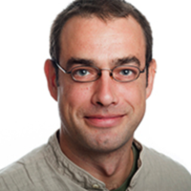

Sandro Romani
Find them at: https://www.janelia.org/lab/romani-lab
How I know Sandro
Postdoc and PhD advisor (2016–23)
I first met Sandro as a collaborator, when he was working with the Pastalkova lab on our paper on internally generated firing fields. He went on to start his own lab at Janelia, co-advised me through the end of my PhD, and supported me during part of my postdoc. I'm grateful for his guidance, especially on the theory and modeling side.
Work highlights
- Short-term plasticity based network model of place cells dynamics
- Behavioral time scale synaptic plasticity underlies CA1 place fields
More of Sandro's work: Google Scholar ↗
Where Sandro is now
He leads his own lab at Janelia Research Campus.